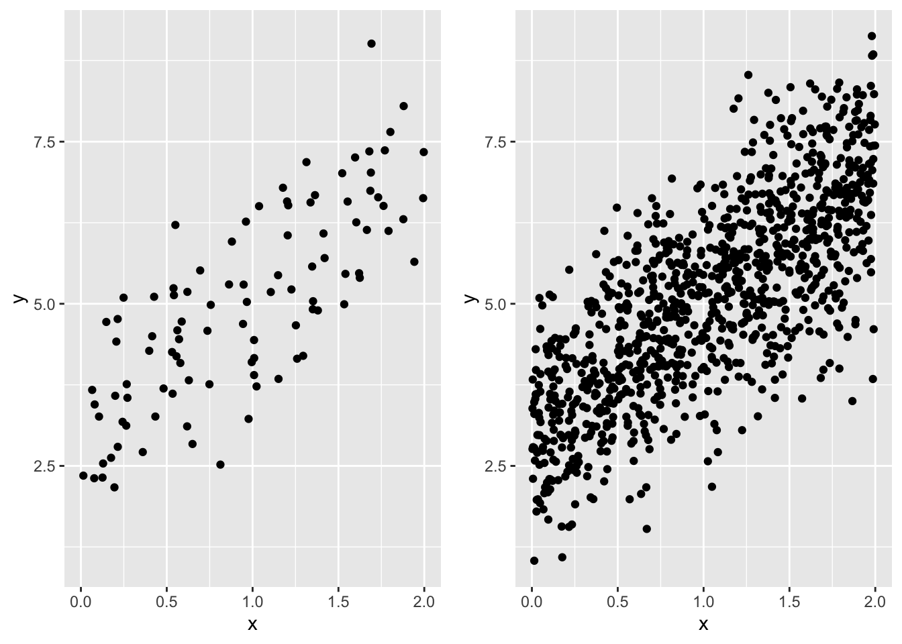
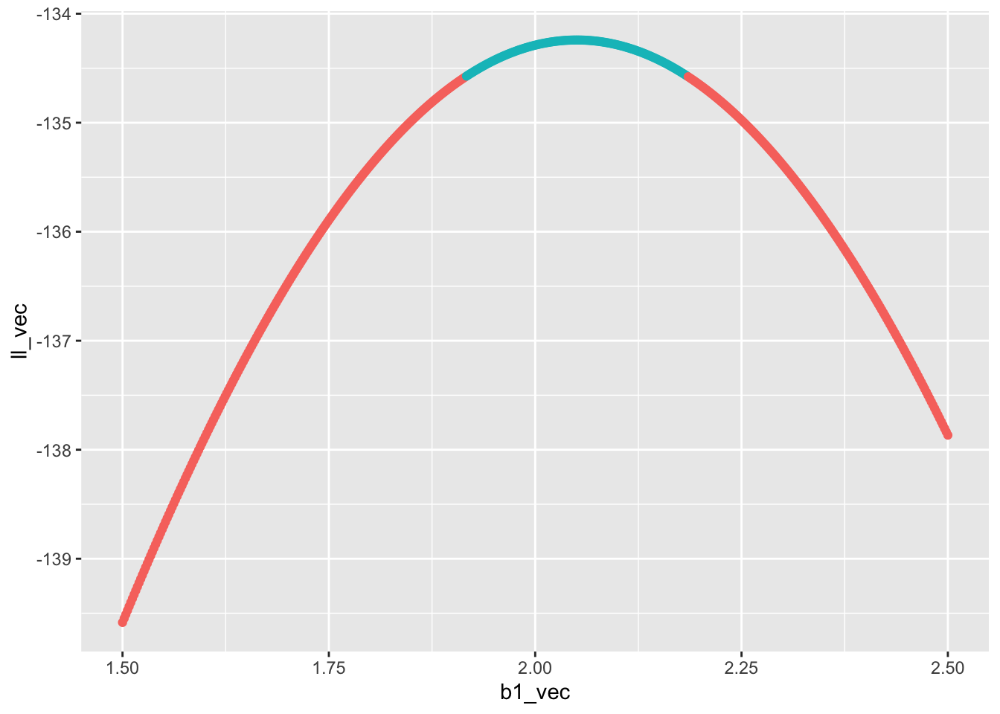

# the true intercept
b0 <- 3
# the true slope
b1 <- 2
# the true sd of the normal dist
s <- 1
# now a data set with 100 samples
x <- runif(100, 0, 2)
y <- rnorm(length(x), b0 + b1 * x, sd = s)
dat_100 <- data.frame(x, y)
# next a data set with 1000 samples
x <- runif(1000, 0, 2)
y <- rnorm(length(x), b0 + b1 * x, sd = s)
dat_1000 <- data.frame(x, y)28 Sample size and power analysis
This lab will guide you through the connection between sample size and confidence, culminating in a power analysis. You can download the template .qmd file for this lab here:
The template will prompt you to work through the following sections.
28.1 The connection between sample size and uncertainty
Intuitively if we have a larger sample size, we feel more confident in our analysis. But why?
The reason is that, mathematically, larger sample sizes increases the precision of our statistical inference. A direct consequence is that, for example, larger sample sizes will lead to tighter confidence intervals. Let’s see an example of this by calculating profile likelihoods for the same model, but based on two different data sets: one with 100 samples, the other with 1,000 samples.
First let’s simulate data. For simplicity (and computational speed) we will go back to a linear model with normally distributed response data and just a slope and intercept
Have a look at each to see that they follow the same trend
gp_100 <- ggplot(dat_100, aes(x, y)) +
geom_point() +
xlim(range(dat_100$x, dat_1000$x)) +
ylim(range(dat_100$y, dat_1000$y))
gp_1000 <- ggplot(dat_1000, aes(x, y)) +
geom_point() +
xlim(range(dat_100$x, dat_1000$x)) +
ylim(range(dat_100$y, dat_1000$y))
# note: we can use `plot_grid` from package cowplot
# to compose multiple plots in one, but we needed
# to manually set `xlim` and `ylim` to be the same
# across plots
plot_grid(gp_100, gp_1000, nrow = 1)
Now we can make profile likelihoods for the maximum likelihood estimate of the slope for each data set. This task will follow the same approach as the last lab, but because we need to repeat the profiling twice, let’s wrap all the code in a funciton so we can use the function repeatedly, rather than copy-pasting code multiple times
# a function to calculate profile likelihood for slope of
# a linear model `y ~ x`
prof_ll_fun <- function(b1_vec, x, y) {
# vector to hold log likelihoods
ll_vec <- numeric(length(b1_vec))
# loop over all values of b1_vec
for(i in 1:length(b1_vec)) {
# make fixed model
mod_fixed <- lm(y ~ 1 + offset(b1_vec[i] * x))
# calculate log lik and store it
ll_vec[i] <- as.numeric(logLik(mod_fixed))
}
# combine into data.frame
ll <- data.frame(b1_vec, ll_vec)
# now compare log lik of fixed models to log lik of full model
# the full model
# no need for `data` arg because we directly pass `x` and `y`
# to the `prof_ll_fun` function
mod <- lm(y ~ x)
# log lik of full model
ll_full <- as.numeric(logLik(mod))
# add column for whether point is within 95% CI
ll <- mutate(ll,
in_ci = ll_vec >= ll_full - pchisq(0.95, 1) / 2)
# return the data.frame
return(ll)
}Now let’s plot the profile likelihoods for both the data sets with 100 and 1,000 samples.
Here is the code for the 100 sample size data set
# make a vector of possible b1 values
# we know the true slope is 2, so make values on either
# side of that
possible_b1 <- seq(1.5, 2.5, length.out = 500)
# run the profile likelihood function
prof_ll_100 <- prof_ll_fun(possible_b1, dat_100$x, dat_100$y)
# plot it
gp_prof_100 <- ggplot(prof_ll_100, aes(b1_vec, ll_vec, color = in_ci)) +
geom_point() +
# removing legend so we can ultimately add this plot
# to the plot for profile likelihood with 1000 samples
theme(legend.position = "none")
gp_prof_100
Now it’s your turn to make a plot for the profile likelihood for the slope estimated from the data set with 1,000 samples and combine the two plots with plot_grid. Ask yourself:
- what about the above code needs to change for for the data set with 1,000 samples?
- how should I align the plots? What code needs to change to make that happen?
- Regarding alignment, should I stack the plots, or put them side-by-side?
Once the final graphic is made: what do you notice? Which data set has a wider confidence interval? How does the confidence interval relate to the shape of the profile likelihood?
28.2 Sample size and power
Because a larger sample size increases our confidence, it also increases our ability to correctly reject the null (i.e. \(P\)-value \(\leq 0.05\)) when the null is indeed false. Conversely, a smaller sample size increases our chance of wrongly failing to reject the null (i.e. \(P\)-value \(> 0.05\)) when in fact the null is false and we should have rejected it. This scenario of falsely failing to reject the null is a false negative, otherwise known as a type II error. The type II error rate is the probability, over many repeated hypothetical studies, of a false negative. The converse is something called power
\[ \begin{aligned} \text{power} &= 1 - \mathbb{P}(\text{Type II}) \\ &= \mathbb{P}(\text{reject null}) \end{aligned} \]
Power is something we care a lot about when designing a study: we want sufficient sample size so that we have high power. But sampling is often expensive and time intensive, so we don’t want to have an arbitrarily large sample, just large enough to reach an acceptable power.
The lower threshold for power is often set at \(\text{power} = 0.8\). Equivalently, that is a 20% chance of a false negative.
As stated, power depends on sample size, but also on effect size. If the slope relating x and y is huge relative to the magnitudes of the variables, we won’t need a very large sample size to reject the null of slope \(b_1 = 0\). But if the slope is shallow, we will need a much larger sample size to reject the null. The magnitudes of the variables is determined, in part, by their inherent variability. For example if
\[ y \sim \mathcal{N}(b_0 + b_1 x, ~\sigma) \]
then a larger \(\sigma\) will increase the magnitude of \(y\) regardless of \(x\) and the slope \(b_1\).
A power analysis is our tool for figuring out what sample size we should choose when designing a study. A power analysis requires us to simulate data, fit models to it, and calculate \(P\)-values many times. When simulating data, we have to make judgement calls about what we think the effect sizes (e.g. slopes) might be for the real data we will collect. If this sounds like the job for a for loop, you are correct.
Let’s first go through the steps that will be part of a for loop
# sample size (this will vary across the loop)
n <- 100
# true slope (this will vary)
b1 <- 2
# simulated data (this will also vary for every iteration)
x <- runif(n, 0, 2)
# for simplicity we will keep intercept and variance
# constant across simulations, but `y` itself will need to
# be re-simulated every time
y <- rnorm(n, mean = 1 + b1 * x, sd = 1)
# full model
mod1 <- lm(y ~ x)
# reduced model
mod0 <- lm(y ~ x)
# calculate LRT p-value by hand (will be faster
# in a for loop)
lambda <- 2 * (logLik(mod1) - logLik(mod0)) |>
as.numeric()
pval <- pchisq(lambda, 1, lower.tail = TRUE)
# test if pval is <= 0.05 (will will need to be stored
# in a vector that you initialize before the for loop)
pval <= 0.05[1] TRUEThose are the steps we will need to re-run for every iteration of our for loop. Your job is to put that for loop together. To help get you started, you will need to create vectors for different slopes and sample sizes. You will also want to replicate each unique value of slope and sample size multiple times so you can calculate the proportion of times you reject the null for each. Here’s a way of achieving that
b1_and_size <- expand.grid(reps = 1:20,
b1 = 0:4,
n = seq(20, 400, by = 20))
all_b1 <- b1_and_size$b1
all_n <- b1_and_size$nIn the above code expand.grid made a large data.frame of all possible combinations of reps, b, and n. The reps column of that data.frame was present just to make sure each unique combination of b and n was replicated. Because reps = 1:20 that means we replicate each unique value 20 times.
Now we have a vector for all the slope values to try out all_b1, and we have a vector for all the sample sizes to try out all_n. You can now make your for loop, iterating over all elements in all_b1 and all_n.
28.2.1 Visualizin the power analysis
When the for loop is complete you can combine all_b1, all_n, and the output of the for loop (perhaps you will call it reject_null) in a data.frame. You could call this data.frame something like pwr_analysis. Now you need to visualize the analysis. But first we need to summarize the raw output so we know, for every unique combination of b1 and n, what \(\text{power} = \mathbb{P}(\text{reject null})\) is. That is a job for group_by |> summarize |> ungroup. Your code will likely look something like
pwr <- group_by(pwr_analysis, b1, n) |>
summarize(power = mean(reject_null)) |>
ungroup()Now you could visualize pwr by plotting power against n and coloring the plotting characters (lines or points or both) by b1. Go for it!